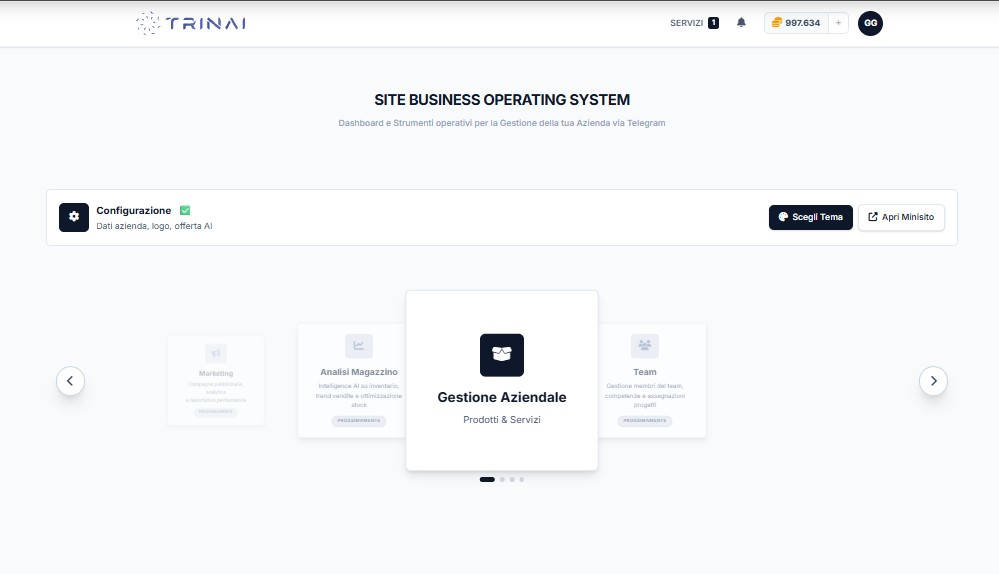
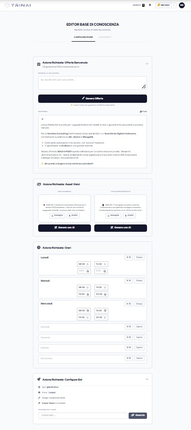
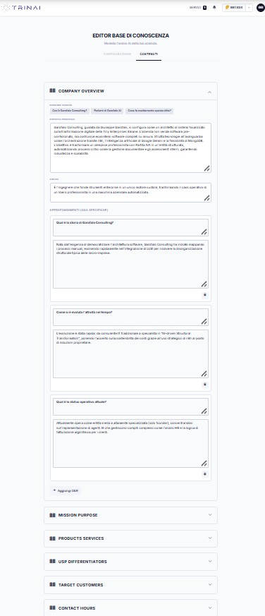

Piattaforma TrinAI & Attivazione
Prima ancora di aprire la Mini-App Telegram di SiTeBoS, esiste una fase di attivazione che avviene sulla Piattaforma TrinAI — l'ambiente comune che ospita SiTeBoS insieme ad altri servizi TrinAI. Account, saldo crediti, anagrafica del referente aziendale e Base di Conoscenza dell'azienda sono gestiti qui, non dentro SiTeBoS: questo capitolo spiega cosa fare prima, e cosa aspettarsi quando torni qui in un secondo momento dalla Mini-App.
La Piattaforma TrinAI è il contenitore comune: account, saldo crediti, anagrafica aziendale e Base di Conoscenza vivono qui e restano condivisi anche se in futuro attivi altri servizi TrinAI oltre a SiTeBoS. SiTeBoS è il servizio operativo — la Mini-App Telegram che gestisci ogni giorno — e viene "acceso" sulla Piattaforma solo al termine dell'attivazione descritta in questa pagina.
Step 1: Creazione dell'Account e del Referente
La registrazione sulla Piattaforma TrinAI crea il tuo account e il profilo del referente aziendale (titolare o responsabile del progetto) — email, nome, telefono. È il punto di partenza da cui deriva tutto il resto.
Step 2: Attivazione del Business e Generazione della Base di Conoscenza
Inserisci i dati essenziali della tua attività: Partita IVA, ragione sociale, indirizzo, settore e una breve descrizione di cosa fai. La Piattaforma usa questi dati per generare automaticamente, tramite ricerca AI, una prima Base di Conoscenza aziendale (Honeypot) — un dossier con informazioni reali sulla tua azienda, pronto per essere rifinito nello Step 4.
Questo passaggio richiede qualche minuto: la ricerca AI consulta fonti reali sulla tua attività, non genera testo generico.
Step 3: Costruzione della Tassonomia — SiTeBoS si Sblocca Qui
Al termine dello Step 2, la Piattaforma genera automaticamente la tassonomia di catalogo: un indice completo di categorie e servizi standard per il tuo settore (sicurezza sul lavoro, front-desk, amministrazione, più le voci specifiche della tua attività). Solo a questo punto SiTeBoS diventa accessibile nella tua Mini-App Telegram — non è un passaggio facoltativo da fare "dopo", è la condizione che sblocca l'intero servizio.
Step 4: Rifinitura della Base di Conoscenza
Una volta attivo, puoi in qualsiasi momento tornare sulla Piattaforma TrinAI (dalla Mini-App, voce Identità Aziendale) per completare e aggiornare la Base di Conoscenza: logo e foto aziendale, orari di apertura, e i contenuti testuali che l'assistente AI userà per rispondere ai tuoi clienti.



Come Fare per Logo e Foto
- Hai già un logo o una foto reale? Caricali direttamente: l'AI li analizza e ne estrae automaticamente la palette colori e un suggerimento di miglioramento.
- Non hai ancora un asset pronto? Usa Genera con AI: il sistema legge il profilo della tua azienda e propone un'immagine su misura. Ricevi prima una bozza da rivedere — solo confermandola viene salvata definitivamente.
Saldo Crediti
Il saldo crediti è di Piattaforma, non solo di SiTeBoS: alimenta tutte le generazioni AI (risposte automatizzate, trascrizioni, perfezionamento catalogo, notarizzazione bilanci) di qualunque servizio TrinAI tu utilizzi. È sempre visibile in alto a destra sulla Dashboard Piattaforma.
Pronto per Iniziare
Completata l'attivazione, apri la Mini-App Telegram: SiTeBoS è ora accessibile. Il capitolo successivo spiega il Menu Configurazione dentro SiTeBoS — profilo owner, bot Telegram e Setup Avanzato.